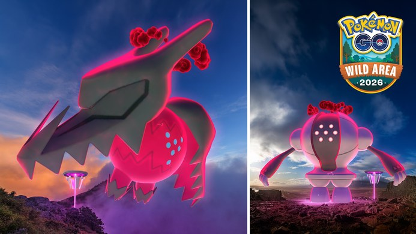
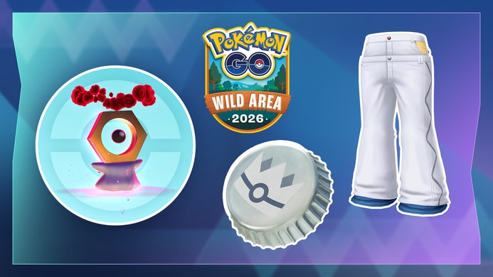

포켓몬 GO 와일드 위크 리모트 레이드 30회, 11월 9일 자시안·11월 10일 자마젠타 에너지 챙기는 순서
리모트 레이드 패스를 모아 두신 분들이라면 11월 달력에 동그라미 하나는 쳐 두셔야 할 것 같은데요, 와일드 위크가 11월 9일 월요일 10시에 시작하거든요. 와일드 위크 동안 리모트 레이드 상한이 30회로 늘고, 11월 9일에는 자시안(검왕), 11월 10일에는 자마젠타(방패왕)가 18시~19시 레이드 아워에 등장해요. 오늘이 10월 25일이니까 이벤트까지 15일 남았네요.
그래서 오늘은 날짜별로 뭘 챙기면 되는지, 자시안·자마젠타 에너지는 어떻게 받고 어디에 쓰는지, 리모트 레이드 30회를 어떻게 나눠 쓸지를 차례대로 정리해 볼게요. 바로 아래 첫 번째 표는 캡처해 두시면 내 일정 체크표로 쓰기 좋답니다 ㅎㅎ
와일드 위크 리모트 레이드 일정은 날짜별로 어떻게 되나요?
포켓몬 GO 와일드 위크는 한국시간 11월 9일(월) 10시부터 11월 13일(금) 20시까지 열리고, 리모트 레이드는 11월 9일~13일에 상한 30회, 그 뒤 11월 14일(토)~15일(일)에는 제한 없이 할 수 있어요.
| 날짜 | 공식 안내 | 리모트 레이드 | 체크 |
|---|---|---|---|
| 11월 9일(월) 10:00 | 와일드 위크 시작 | 30회 구간(11/9부터) | ☐ |
| 11월 9일(월) 18:00~19:00 | 레이드 아워, 자시안(검왕) | 30회 구간 | ☐ |
| 11월 10일(화) 18:00~19:00 | 레이드 아워, 자마젠타(방패왕) | 30회 구간 | ☐ |
| 11월 11일(수)~12일(목) | 레이드 아워 안내 없음, 별5 맥스배틀(11일 레지스틸·12일 레지드래고) | 30회 구간 | ☐ |
| 11월 13일(금) 20:00 | 와일드 위크 종료, 별5 맥스배틀(라티아스·라티오스) | 30회 구간 마지막 날 | ☐ |
| 11월 14일(토)~15일(일) | 와일드 위크 이후 | 제한 없음 | ☐ |
레이드 아워는 현지 시각 기준이라서, 한국에서 접속하면 18시~19시로 보시면 돼요.
레이드 아워가 월요일과 화요일에 연달아 잡혀 있어서 평일 저녁 6시를 비워 두는 게 첫 번째 숙제예요. 다만 공식 레이드 목록에는 자시안(검왕)과 자마젠타(방패왕)가 전설 레이드배틀로도 날짜 구분 없이 같이 올라 있어서, 날짜가 갈리는 건 레이드 아워 한 시간뿐이에요. 주말인 14일과 15일은 레이드 아워 안내 없이 횟수 제한만 풀리는 구간이라 성격이 조금 달라요.
자시안·자마젠타 에너지는 어떻게 받나요?
소드 에너지는 레이드배틀에서 자시안(검왕)을 쓰러뜨리면, 실드 에너지는 자마젠타(방패왕)를 쓰러뜨리면 각각 받을 수 있어요.
| 레이드 아워 | 등장 보스 | 받을 수 있는 에너지 |
|---|---|---|
| 11월 9일(월) 18:00~19:00 | 자시안(검왕) | 소드 에너지 |
| 11월 10일(화) 18:00~19:00 | 자마젠타(방패왕) | 실드 에너지 |
에너지는 보스를 쓰러뜨리면 받는다고 안내돼 있고, 포획 얘기는 따로 없어요. 그래서 에너지만 노린다면 볼을 던지기 전에 보스를 쓰러뜨리는 게 먼저인 셈이죠. 소드와 실드는 보스마다 따로 나오는 에너지예요. 레이드 아워는 날짜가 갈려 있지만 전설 레이드에는 두 보스가 같이 올라 있다고 안내돼 있어서, 한 시간짜리 레이드 아워를 놓쳐도 길이 아주 막힌 건 아니에요.
소드 에너지와 실드 에너지는 어디에 쓰나요?
소드 에너지는 스페셜 어택 '아이언헤드'를 배운 자시안을 자시안(검왕)으로 변신시킬 때 쓰고, 실드 에너지는 같은 방식으로 자마젠타를 자마젠타(방패왕)로 변신시킬 때 써요.
- 레이드에서 자시안(검왕)·자마젠타(방패왕)를 쓰러뜨려 에너지를 모아요.
- 스페셜 어택 '아이언헤드'를 배운 자시안 또는 자마젠타를 준비해요.
- 필요한 에너지를 모두 모으면 검왕 또는 방패왕으로 변신시킬 수 있어요.
- 변신하면 '아이언헤드'가 자시안은 '거수참', 자마젠타는 '거수탄'으로 바뀌어요.
에너지를 모으면 이 화면에서 변신을 고르게 돼요.
공식 안내에는 한 번 변신시킨 뒤엔 에너지 없이도 모습을 자유롭게 바꿀 수 있다고 적혀 있어요. 다만 검왕·방패왕 상태에서는 교환하거나 Pokémon HOME으로 보낼 수 없다고 하니, 교환할 생각이 있는 개체라면 변신 전에 한 번 더 따져 보세요. 그리고 변신에 에너지가 총 몇 개 드는지는 확정하기 어려워요. 한국어 안내에는 검왕·방패왕 변신이 '필요한 에너지'라고만 나와 있고, 1,000개는 '역전의 용사' 변신에만 나오는 숫자예요.
확인 위치: 이벤트 시작 후 인게임 레이드 결과 화면·자시안 정보 화면, 공식 공지 · 확인되면 아래에 채워주세요.
| 항목 | 값(확인 후 입력) |
|---|---|
| 레이드 1회 클리어 때 받은 소드·실드 에너지 수 | — |
| 검왕·방패왕 변신에 필요한 에너지 총량 (한국어 안내는 «필요한 에너지»로만 적었고, 1,000개라는 숫자는 역전의 용사 모습 쪽 문장에 있어 총량으로 확정하지 않음) | — |
리모트 레이드 30회, 어떻게 나눠 쓰면 좋을까요?
와일드 위크 리모트 레이드 상한은 11월 9일~13일에 30회로 공식 안내에 적혀 있고, 이 30회가 하루 몫인지 기간 전체 몫인지는 안내에 따로 표기가 없어요.
단위가 정해져 있지 않으니, 아래는 공식 일정만 근거로 한 제 제안이에요. 확정된 공략이 아니라 각자 사정에 맞춰 고르시는 선택지로 봐 주세요.
30회, 이럴 땐 이렇게 나눠 보세요
· 11월 9일·10일 18시~19시에 접속할 수 있다면: 두 날 18시 구간에 레이드를 몰아서 돌려요. 공식이 날짜와 시각을 못 박아 둔 구간이라서요.
· 둘 중 하루만 가능하다면: 레이드 아워 한 시간만 보면 에너지가 더 급한 쪽 보스의 날을 고르세요.
· 18시~19시를 맞추기 어렵다면: 11월 14일~15일 제한 없는 구간을 노려 보세요. 그 이틀에 어떤 보스가 열리는지만 레이드 목록에서 먼저 보시면, 횟수 걱정 없이 패스를 쓸 수 있어서요.
레이드 목록에서 보스 이름과 남은 시간을 먼저 보게 돼요.
저는 〔11월 9일 18시 / 11월 10일 18시 / 두 날 18시〕를 먼저 비워 두려고 해요.
와일드 위크에는 레이드 말고 뭘 챙기면 되나요?
레이드 말고는 소중한 보물 상자와 이상한 상자 보너스, 별5 맥스배틀, 맥스배틀 에너지 충전 보너스, 색이 다른 포켓몬 가능성이 이벤트 안내에 올라 있어요.
- 소중한 보물 상자: 색이 다른 모으령을 만날 수 있어요. 한국시간 11월 9일 10시부터 11월 15일 18시까지예요.
- 이상한 상자: 같은 기간 동안 대기시간이 줄어들고, 운이 좋으면 색이 다른 멜탄을 만날 수 있어요. 같은 기간 데일리 디스커버리는 진행되지 않아요.
- 별5 맥스배틀: 11월 11일 레지스틸, 12일 레지드래고, 13일 라티아스·라티오스가 나오고, 다이맥스 레지드래고는 이번에 처음 등장해요. 각 포켓몬은 같은 날 한국시간 18시~19시 맥스배틀 시간에도 나와요.
- 맥스배틀 보너스: 전 세계 트레이너가 '와일드 위크' 글로벌 챌린지를 완료하면 열리는 보너스로 자시안(검왕)의 '거수참'과 자마젠타(방패왕)의 '거수탄' 필드 효과가 강화되고, 맥스배틀에서 얻은 에너지가 게이지를 더 빠르게 채워요.
- 레이드 보스: 자시안(검왕)과 자마젠타(방패왕)에는 운이 좋으면 색이 다른 포켓몬을 만날 수도 있다는 표시가 붙어 있어요.

별5 맥스배틀로 나오는 다이맥스 레지드래고와 레지스틸이 로고와 함께 그려진 공식 이미지예요.
출처: 포켓몬 GO 공식 공지 pokemongo.com · 네이버 본문엔 받아서 재업로드 권장

와일드 위크 공식 이미지예요. 일반 색 다이맥스 멜탄과 은 병뚜껑, 하얀 바지가 로고와 함께 그려져 있어요.
출처: 포켓몬 GO 공식 공지 pokemongo.com · 네이버 본문엔 받아서 재업로드 권장
자주 묻는 질문
Q. 와일드 위크 기간에 무료 리모트 레이드 패스를 주나요?
이벤트 소식에 무료 패스를 준다는 얘기는 없어요. 늘어나는 건 쓸 수 있는 횟수의 상한이라서, 패스 개수는 미리 세어 두시는 쪽이 마음 편해요.
Q. 이번에 쿠폰이나 프로모션 코드도 나오나요?
공식 이벤트 소식에는 쿠폰이나 프로모션 코드 이야기가 없어요. 이번 이벤트에서 받을 수 있는 보상은 위에서 정리한 에너지와 보너스 쪽이에요.
와일드 위크 리모트 레이드 정리
저라면 11월 9일과 10일 저녁 6시를 먼저 비워 두고, 나머지 날의 리모트 횟수는 레이드 목록을 보면서 나눠 쓰겠어요. 일정은 지금 공지된 그대로예요. 이벤트 하루 전인 11월 8일쯤 한 번 더 확인해서 바뀐 게 있으면 이 글에 반영해 두겠습니다. 자시안이랑 자마젠타 에너지 두둑하게 챙기시길 바랍니다~
✔ 포켓몬 GO 같이 보기 좋은 내용
· 포켓몬고 자망칼 커뮤니티 데이 11월 21일 14시~17시, 절각참 대도각참 진화 도각참 배우는 조건
· 포켓몬고 메테노 샤워 시간 매일 17시부터 21시, 10월 24일까지 야생 메테노와 별의모래 챙기기
· 포켓몬 GO 메가깜까미 슈퍼 맥스 레벨, 11월 1일 오전 10시부터 올릴 수 있어요
참고한 곳 (2026.10.25 기준)
· 포켓몬 GO 공식 공지 — 와일드 위크
· 포켓몬 GO 공식 공지 — 자시안·자마젠타 에너지